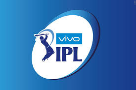

|  | Ipl ticket bookingdivided by kingdom united by ipl |
VIVO IPL 2020 auction completed and it’s set to start most probably on 29 March 2019. You may look for where and when to buy ticket? There are IPL partners like Book my show, Event Now and other’s where you can buy tickets. Each IPL team has their own official website where they publish the latest information about where and how to book tickets.
The 13th edition of the Indian Premier League (IPL 2020) is all set to be hosted in the United Arab Emirates. However, a few questions on the IPL 2020 schedule, format, venues, and exact timelines still remain unanswered. Here is each and every aspect of the IPL 2020 and all the latest updates & developments related to it.
IPL 2020 will start on September 19 in UAE.
Earlier the tentative window for IPL 2020 is between September 26th to November 8th. But now as per the latest news, BCCI reported that IPL 2020 will start on September 19 in UAE.
Check out the IPL New Schedule 2020 here.
| Date | Time(IST) | Matches | stadium/city |
|---|---|---|---|
| 29. Mar. 2020 | 08:00:00 PM | Mumbai Indian (MI) Vs Chennai Super King (CSK) | Wankhede Stadium, Mumbai, Maharashtra. |
| 30. Mar. 2020 | 08:00:00 PM | Delhi Capital (DC) Vs Kings XI Punjab (KXIP) | Feroz Shah Kotla Ground, Delhi |
| 31. Mar. 2020 | 08:00:00 PM | Royal Challengers Bangalore (RCB) Vs Kolkata Knight Riders (KKR) | M. Chinnaswamy Stadium, Bengaluru |
| 1. Apr. 2020 | 08:00:00 PM | Sunrisers Hyderabad (SRH) Vs Mumbai Indians (MI) | Rajiv Gandhi Intl. Cricket Stadium, Hyderabad |
| 2. Apr. 2020 | 08:00:00 PM | Chennai Super Kings (CSK) Vs Rajasthan Royals (RR) | M. A. Chidambaram Stadium, Chennai |
| 3. Apr. 2020 | 08:00:00 PM | Kolkata Knight Riders (KKR) Vs Delhi Capitals (DC) | Eden Gardens, Kolkata |
| 4. Apr. 2020 | 08:00:00 PM | Kings XI Punjab (KXIP) Vs Sunrisers Hyderabad (SRH) | IS Bindra Stadium, Mohali |
| 5. Apr. 2020 | 04:00:00 PM | Mumbai Indians (MI) Vs Royal Challengers Bangalore (RCB) | Wankhede Stadium, Mumbai, Maharashtra. |
| 5. Apr. 2020 | 08:00:00 PM | Rajasthan Royals (RR) Vs Delhi Capitals (DC) | TBC, TBC |
| 6. Apr. 2020 | 08:00:00 PM | Kolkata Knight Riders (KKR) Vs Chennai Super Kings (CSK) | Eden Gardens, Kolkata |
| 7. Apr. 2020 | 08:00:00 PM | Royal Challengers Bangalore (RCB) Vs Sunrisers Hyderabad (SRH) | M. Chinnaswamy Stadium, Bengaluru |
| 8. Apr. 2020 | 08:00:00 PM | Kings XI Punjab (KXIP) Vs Mumbai Indians (MI) | IS Bindra Stadium, Mohali |
| 9. Apr. 2020 | 08:00:00 PM | Rajasthan Royals (RR) Vs Kolkata Knight Riders (KKR) | TBC, TBC |
| 10. Apr. 2020 | 08:00:00 PM | Delhi Capital (DC) Vs Royal Challengers Bangalore (RCB) | Feroz Shah Kotla Ground, Delhi |
| 11. Apr. 2020 | 08:00:00 PM | Chennai Super King (CSK) Vs Kings XI Punjab (KXIP) | M. A. Chidambaram Stadium, Chennai |
| 12. Apr. 2020 | 04:00:00 PM | Sunrisers Hyderabad (SRH) Vs Rajasthan Royals (RR) | Rajiv Gandhi Intl. Cricket Stadium, Hyderabad |
| 12. Apr. 2020 | 08:00:00 PM | Kolkata Knight Riders (KKR) Vs Mumbai Indian (MI) | Eden Gardens, Kolkata |
| 13. Apr. 2020 | 04:00:00 PM | Delhi Capital (DC) Vs Chennai Super King (CSK) | Feroz Shah Kotla Ground, Delhi |
| 14. Apr. 2020 | 08:00:00 PM | Kings XI Punjab (KXIP) Vs Royal Challengers Bangalore (RCB) | IS Bindra Stadium, Mohali |
| 15. Apr. 2020 | 08:00:00 PM | Mumbai Indian (MI) Vs Rajasthan Royals (RR) | Wankhede Stadium, Mumbai, Maharashtra. |
| 16. Apr. 2020 | 08:00:00 PM | Sunrisers Hyderabad (SRH) Vs Kolkata Knight Riders (KKR) | Rajiv Gandhi Intl. Cricket Stadium, Hyderabad |
| 17. Apr. 2020 | 08:00:00 PM | Kings XI Punjab (KXIP) Vs Chennai Super Kings (CSK) | IS Bindra Stadium, Mohali |
| 18. Apr. 2020 | 08:00:00 PM | Royal Challengers Bangalore (RCB) Vs Rajasthan Royals (RR) | M. Chinnaswamy Stadium, Bengaluru |
| 19. Apr. 2020 | 04:00:00 PM | Delhi Capitals (DC) Vs Kolkata Knight Riders (KKR) | Feroz Shah Kotla Ground, Delhi |
| 19. Apr. 2020 | 08:00:00 PM | Chennai Super Kings (CSK) Vs Sunrisers Hyderabad (SRH) | M. A. Chidambaram Stadium, Chennai |
| 20. Apr. 2020 | 08:00:00 PM | Mumbai Indians (MI) Vs Kings XI Punjab (KXIP) | Wankhede Stadium, Mumbai, Maharashtra. |
| 21. Apr. 2020 | 08:00:00 PM | Rajasthan Royals (RR) Vs Sunrisers Hyderabad (SRH) | Sawai Mansingh Stadium, Jaipur |
| 22. Apr. 2020 | 08:00:00 PM | Royal Challengers Bangalore (RCB) Vs Delhi Capitals (DC) | M. Chinnaswamy Stadium, Bengaluru |
| 23. Apr. 2020 | 08:00:00 PM | Kolkata Knight Riders (KKR) Vs Kings XI Punjab (KXIP) | Eden Gardens, Kolkata |
| 24. Apr. 2020 | 08:00:00 PM | Chennai Super Kings (CSK) Vs Mumbai Indians (MI) | M. A. Chidambaram Stadium, Chennai |
| 25. Apr. 2020 | 08:00:00 PM | Rajasthan Royals (RR) Vs Royal Challengers Bangalore (RCB) | Sawai Mansingh Stadium, Jaipur |
| 26. Apr. 2020 | 04:00:00 PM | Kings XI Punjab (KXIP) Vs Kolkata Knight Riders (KKR) | IS Bindra Stadium, Mohali |
| 26. Apr. 2020 | 08:00:00 PM | Sunrisers Hyderabad (SRH) Vs Delhi Capitals (DC) | Rajiv Gandhi Intl. Cricket Stadium, Hyderabad |
| 27. Apr. 2020 | 08:00:00 PM | Chennai Super Kings (CSK) Vs Royal Challengers Bangalore (RCB) | M. A. Chidambaram Stadium, Chennai |
| 28. Apr. 2020 | 08:00:00 PM | Mumbai Indians (MI) Vs Kolkata Knight Riders (KKR) | Wankhede Stadium, Mumbai |
| 29. Apr. 2020 | 08:00:00 PM | Rajasthan Royals (RR) Vs Kings XI Punjab (KXIP) | Sawai Mansingh Stadium, Jaipur |
| 30. Apr. 2020 | 08:00:00 PM | Sunrisers Hyderabad (SRH) Vs Chennai Super Kings (CSK) | Rajiv Gandhi Intl. Cricket Stadium, Hyderabad |
| 1. May. 2020 | 08:00:00 PM | Mumbai Indians (MI) Vs Delhi Capitals (DC) | Wankhede Stadium, Mumbai |
| 2. May. 2020 | 08:00:00 PM | Kolkata Knight Riders (KKR) Vs Rajasthan Royals (RR) | Eden Gardens, Kolkata |
| 3. May. 2020 | 04:00:00 PM | Royal Challengers Bangalore (RCB) Vs Kings XI Punjab (KXIP) | M. Chinnaswamy Stadium, Bengaluru |
| 3. May. 2020 | 08:00:00 PM | Delhi Capitals (DC) Vs Sunrisers Hyderabad (SRH) | Feroz Shah Kotla Ground, Delhi |
| 4. May. 2020 | 08:00:00 PM | Rajasthan Royals (RR) Vs Chennai Super Kings (CSK) | Sawai Mansingh Stadium, Jaipur |
| 5. May. 2020 | 08:00:00 PM | Sunrisers Hyderabad (SRH) Vs Royal Challengers Bangalore (RCB) | Rajiv Gandhi Intl. Cricket Stadium, Hyderabad |
| 6. May. 2020 | 08:00:00 PM | Delhi Capitals (DC) Vs Mumbai Indians (MI) | Feroz Shah Kotla Ground, Delhi |
| 7. May. 2020 | 08:00:00 PM | Chennai Super Kings (CSK) Vs Kolkata Knight Riders (KKR) | M. A. Chidambaram Stadium, Chennai |
| 8. May. 2020 | 08:00:00 PM | Kings XI Punjab (KXIP) Vs Rajasthan Royals (RR) | IS Bindra Stadium, Mohali |
| 9. May. 2020 | 08:00:00 PM | Mumbai Indians (MI) Vs Sunrisers Hyderabad (SRH) | Wankhede Stadium, Mumbai |
| 10. May. 2020 | 04:00:00 PM | Chennai Super Kings (CSK) Vs Delhi Capitals (DC) | M. A. Chidambaram Stadium, Chennai |
| 10. May. 2020 | 08:00:00 PM | Kolkata Knight Riders (KKR) Vs Royal Challengers Bangalore (RCB) | Eden Gardens, Kolkata |
| 11. May. 2020 | 08:00:00 PM | Rajasthan Royals (RR) Vs Mumbai Indians (MI) | Sawai Mansingh Stadium, Jaipur |
| 12. May. 2020 | 08:00:00 PM | Sunrisers Hyderabad (SRH) Vs Kings XI Punjab (KXIP) | Rajiv Gandhi Intl. Cricket Stadium, Hyderabad |
| 13. May. 2020 | 08:00:00 PM | Delhi Capitals (DC) Vs Rajasthan Royals (RR) | Feroz Shah Kotla Ground, Delhi |
| 14. May. 2020 | 04:00:00 PM | Royal Challengers Bangalore (RCB) Vs Chennai Super Kings (CSK) | M. Chinnaswamy Stadium, Bengaluru |
| 15. May. 2020 | 08:00:00 PM | Kolkata Knight Riders (KKR) Vs Sunrisers Hyderabad (SRH) | Eden Gardens, Kolkata |
| 16. May. 2020 | 04:00:00 PM | Kings XI Punjab (KXIP) Vs Delhi Capitals (DC) | IS Bindra Stadium, Mohali |
| 17. May. 2020 | 08:00:00 PM | Royal Challengers Bangalore (RCB) Vs Mumbai Indians (MI) | M. Chinnaswamy Stadium, Bengaluru |